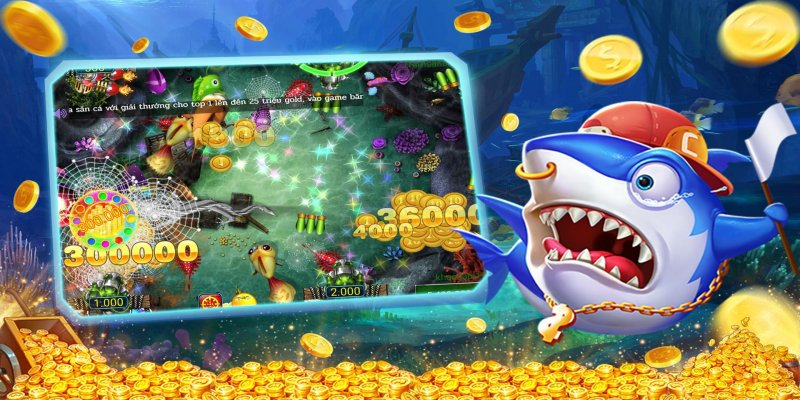
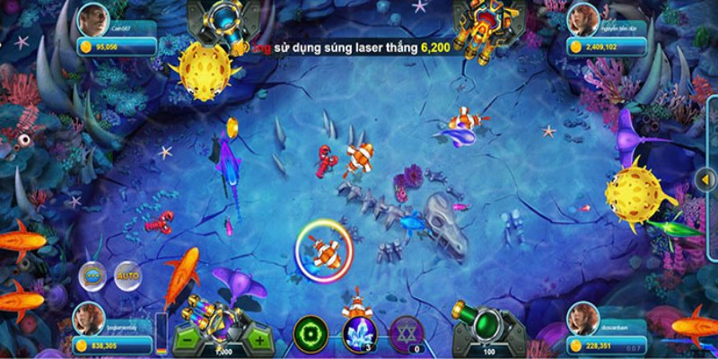

Game Bắn Cá Ăn Xu hiện đang thu hút sự quan tâm lớn từ người chơi trên toàn quốc. Vậy để giành chiến thắng trong trò chơi này, bạn cần phải lưu ý điều gì? Bài viết dưới đây từ Vin777 sẽ cung cấp những thông tin chi tiết và hướng dẫn cần thiết để giúp bạn có cơ hội chiến thắng cao nhất.
Bắn cá là một trò chơi online nổi bật và thu hút đông đảo người chơi bởi sự hấp dẫn và sự kích thích mà nó mang lại. Dù có luật chơi khá đơn giản, nhưng việc chiến thắng và kiếm tiền từ trò chơi này lại đòi hỏi sự khéo léo và chiến thuật. Điều này đã tạo nên một thách thức thú vị cho các cược thủ, khiến họ luôn cảm thấy hào hứng và muốn chinh phục trò chơi này.
Với sự phát triển không ngừng của công nghệ, Bắn cá đã được nâng cấp đáng kể và hiện có mặt trên các nền tảng của những nhà cái uy tín như Vin777. Trò chơi giờ đây không chỉ dừng lại ở hình ảnh 2D đơn giản mà đã được cải tiến với công nghệ hình ảnh 3D sắc nét, mang đến trải nghiệm chơi game chân thực và sống động. Âm thanh cũng được chăm chút tỉ mỉ, làm tăng thêm phần kịch tính và hấp dẫn. Bên cạnh đó, vũ khí và trang thiết bị trong trò chơi cũng được cập nhật hiện đại và tối tân, giúp người chơi có nhiều lựa chọn hơn để săn cá.
Với những cải tiến vượt bậc này, Bắn cá không chỉ là một trò chơi giải trí mà còn đã trở thành một biểu tượng huyền thoại trong thế giới cá cược, thu hút sự quan tâm của không chỉ những người chơi mới mà còn cả những cược thủ dày dạn kinh nghiệm.
Xem Thêm: Thái Sicbo Vin777 - Kỹ Năng Giúp Mang Lại Chiến Thắng Cho Game Thủ
Như chúng ta đã biết cách chơi Bắn Cá Ăn Xu thật hiện nay không phải dễ dàng. Điều này đòi hỏi người chơi phải tự mình tìm ra các mẹo bắn cá riêng biệt. Kết hợp với luật chơi cũng như thủ thuật đã đặt ra từ trước.
Chi tiết hướng dẫn cách chơi bắn cá ăn xu tại Vin777
Một trong những phương pháp Bắn Cá Ăn Xu hiệu quả là anh em cần phải cách nạp đạn và tăng đạn sao cho hiệu quả. Đối với mẹo chơi này anh em sẽ tăng đạn dần từ ít đến nhiều. Như vậy, khi cược thủ bắn tới viên đạn thứ 100 chỉ mất có 558 điểm. Đặc biệt, số lượng cá mà người chơi có thể tiêu diệt được rất lớn, khoảng 1000 điểm mang về. Điều này yêu cầu anh em phải nhanh tay tăng đạn đúng thời điểm nhất.
Nếu như anh em để ý, sẽ có một số chú cá sẽ bị tiêu diệt ngay khi vừa vượt ra khỏi bàn đấu. Đây chính là một thời điểm vàng để anh em bắn cá ngay lập tức, theo như khảo sát thì xác xuất tiêu diệt khi cá theo phương pháp này là rất cao. Tuy nhiên với cách bắn cá này anh em cần phải ngắm thật chính xác và chỉ áp dụng được với những chú cá nhỏ.
Với mẹo Bắn Cá Ăn Xu này thường anh em sẽ có thể mang lại cho bản thân mình một lượng xu vừa phải. Ngoài ra, người chơi cũng cần phải nạp đầy đạn và chú ý đến các góc bàn để có thể gia tăng cơ hội tiêu diệt cá cao nhất.
Đây chính là một trong những phương pháp được nhiều người cháp dụng. Bởi mẹo chơi này sẽ giúp cho anh em bắn hạ được một chú boss lớn. Mà hiến thuật bắn cá theo nhịp điệu tiến lùi tiến sẽ gia tăng cơ hội tiêu diệt thành công hơn. Các bước chơi sẽ được thực hiện như sau.
Trong trò chơi Bắn Cá Ăn Xu để tiêu diệt được một con boss bằng 1 loại đạn thực sự là rất khó. Chính vì thế mà người chơi nên quan sát thời điểm cá nhỏ và to xuất hiện cùng thời điểm, hãy kết hợp nhiều loại vũ khí lại với nhau để tấn công được hiệu quả hơn.
Người chơi nổ đạn liên tục vào mục tiêu
Tuỳ vào mỗi sân chơi thì bắn cá sẽ có những quy định riêng. Như vậy trước khi tiến hành tham gia các cược. Anh em nên đọc và nắm rõ các quy luật mà nhà cái đã đưa ra để tránh vi phạm.
Trước khi tham gia vào trò chơi Bắn Cá Ăn Xu anh em nên bỏ chút thời gian ra để tìm hiểu. Đặc biệt đối với những người chơi mới tìm hiểu về tựa game này, ban đầu tham gia sẽ khó tránh được những sai lầm và mất khá nhiều tiền. Tuy nhiên, sau khi trải nghiệm nhiều đảm bảo anh em sẽ rút ra được cho mình những bài học nhất định, để gia tăng cơ hội chiến thắng các lần chơi sau.
Khi đã tham khảo qua bài viết trên của nhà cái Vin777 chắc hẳn anh em đã phần nào nắm được cách chơi game Bắn Cá Ăn Xu rồi đúng không nào. Hy vọng rằng những thông tin mà chúng tôi mang lại ở phía trên sẽ giúp ích được nhiều cho cược thủ.
890572473
33/2D Nguyễn Đình Chiểu, Phường 4, Phú Nhuận, Hồ Chí Minh, Vietnam
#vin777, #vin777com #vin777club